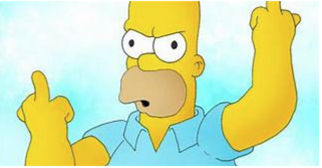

0. You just DO WHAT THE FUCK YOU WANT TO.
Put even less contrast
Yeah, a #444 is cool but a #454545 is better.
We don't need to break our eyes while looking at a motherfuckingwebsite.
Size matters, yeah, but don't exaggerate
Remember, not everybody is blind, and not everybody wants to read a fucking 2 inches letter on a 27 inches screen, so keep it cool. Don't exaggerate in size, but don't make an ant-compatible text either.
Put some pictures
This is the best fucking rappeur of the world. Listen to nique la bac
We're not looking at a novel by Stephanie Meyer, this is a motherfuckingwebsite so include some pictures to give a context.
The website shouldn't be overfilled with pictures, but it should make the user happy while reading your nonsense words.
You see that fancy rappeur? He's happy, you should be too.
Yes, even this is satire.
But this doesn't mean you should load your motherfuckingwebsite with shitty animations, instead keep it simple, minify its resources and use images responsibly.  Remember the IPoAC users,
Good design is as little design as possible.Some German motherfucker on motherfuckingwebsite.com
That's not entirely true, look at that motherfuckingwebsite. It's so minimal that it can be considered crap.
Epilogue
Actually this website was made to follow the trend of the motherfuckingwebsite and the bettermotherfuckingwebsite.
Despite what was said here they're beautiful and truly among the best websites on the internet (even though this is still thebestmotherfuckingwebsite), so go check 'em out.
Seriously, follow some of the advice we gave you, >they'll "make the web great again"
Author
This website was created by an annoyed developer that can be followed on Twitter, followed on GitHub or contacted here, on his ultra-minimalist website
Resources
the picture was extract from ( who cares ??) and the author said make some dirty shit, you won't wah it mamène
. Thx for reading my website, Madmax
, open an issue on GitHub if you think that this decision goes against the rules (there is some rules ??)
of a good looking motherfuckingwebsite.
Legal
This website can be freely copied, modified, altered, distributed without any attribution whatsoever. However, if you feel like this website deserves an attribution, mention it. It won't hurt anybody :)
Please, read the license terms.
Don't worry, it can be read in less than 30 seconds, unless you have some sort of reading disability - in that case, I'm wondering why you're still reading this text. Really. Stop. Please. I mean, seriously. Why are you still reading? because I'm too curiouse to not go till the end and maybe I'm crazy too....

Contributions
Since this website includes some contributions, and I'm not an asshole, I'll publically thank the following users for their help:
- @beardog108 for his precious suggestions for the server side part (Cache-Control, HTTP/2, CORS and Piwik)
- @5ilver, @abluejelly, @bharadwaj-raju for giving tips about contrast
- @hellerbarde for his hint about the visited link color (he proposed maroon) - if you don't like it, complain about it here
- @glodime for his suggestion about text justification on mobile
- @arthurtiteica and @vktec for their suggestions about PIN Code / RAS Syndrome fix.
- @friendlyanon and @C-Lodder for improving the JS.
- @Zsavajji, @CapacitorSet, @danielquinn, @ehea617, @MrSaad, @tqdv, @mothinx for their help in spell checking